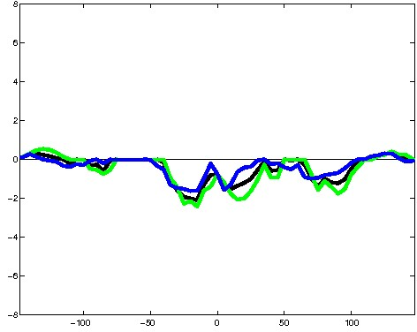
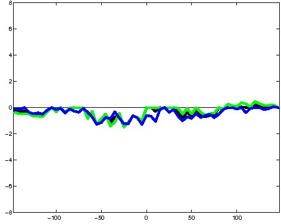
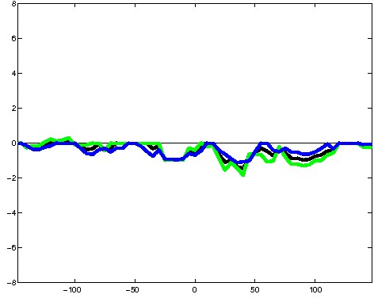
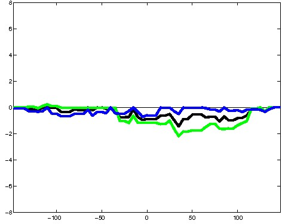
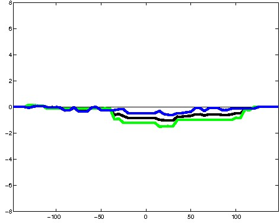
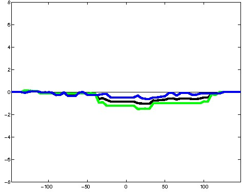
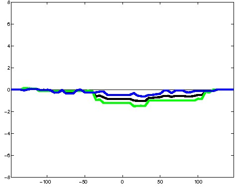

K562 Repressive DNase matched - State 18:Pol2 (n=6)
K562 Repressive DNase matched - State 18:Pol2 (n=6)
[
See group descriptions
]





; picked in K562 (state 18:Pol2, DNase); matched; chr11:73,577,669-73,577,963 (295bp)") 
